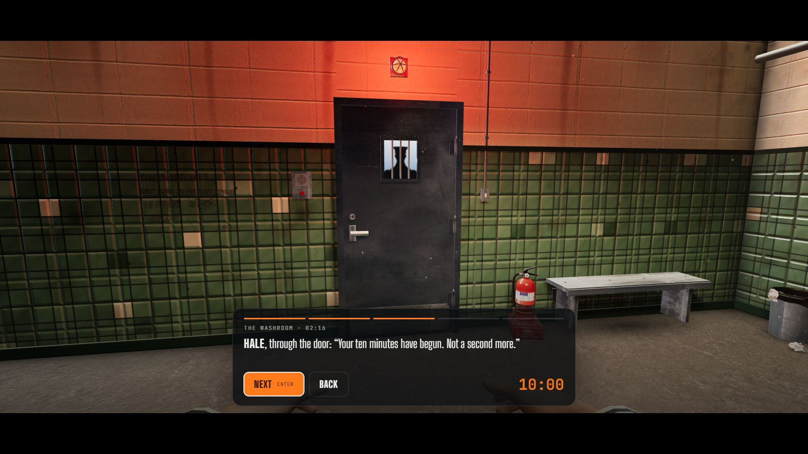
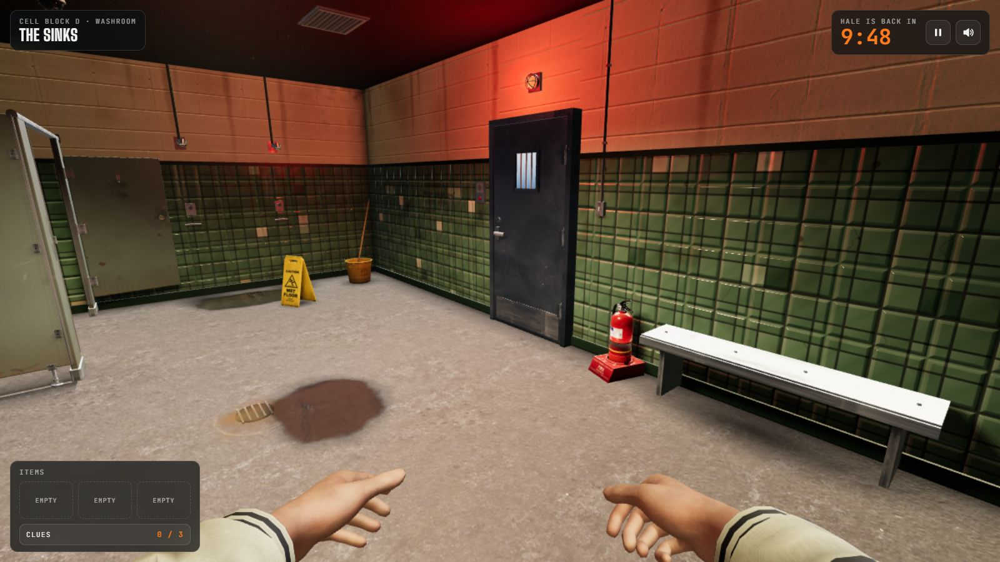
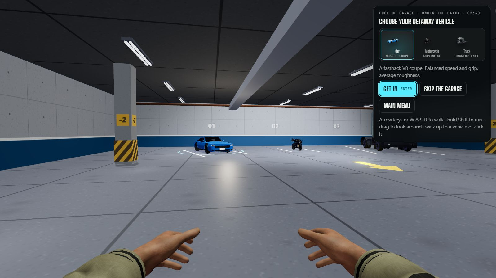
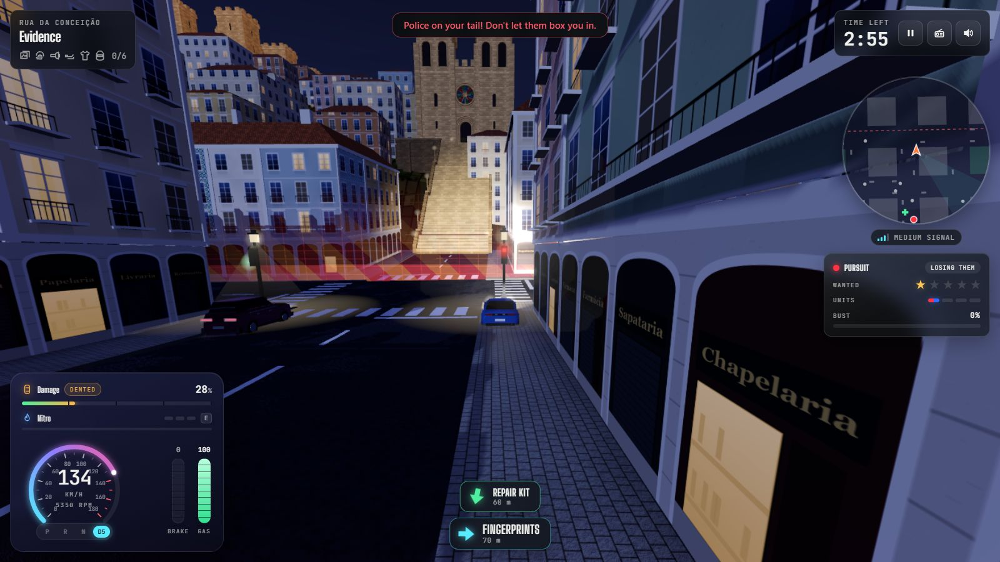

Nova SBE · Introduction to Programming · Team project
FramedOne night in Lisbon
April 2012: the Starfall necklace vanishes from Lisbon's naval museum. You were the detective on the case, until the trail ended at your own door. Now you are inmate 4471, and someone framed you.
Start the game →- 01Break out of Cell Block D
- 02Take the tunnel to the garage
- 03Outrun the police through Lisbon




Source code, tests and the rules: github.com/AlexanderLeusch/framed-one-night-in-lisbon